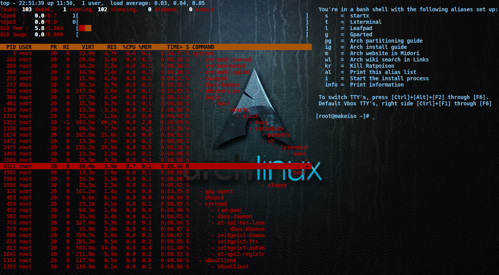

Cody's Linux Blog Test Run
 Tried using jeykll on Arch Linux to make a static webpage for github pages (here). What a pain in the ass of version incompatibilities. Tell us what Linux distro to use github! Be easy enough to spin up a container with Debian, Centos, or whatever to work with jeykell, rather than spend the next week figuring this all out.
Guess I'll have to learn Ruby for jekyll be a reasonably useful platform on Arch. If I was going to learn a second scripting language, python would be a more likely candidate, or how about skipping the scripting languages all together and move onto a compiled language. OK, I just want a damn static html page, and don't want to learn a new language to do it! Took me 10 g-dam years to be able to hack together a bash script, and that wasn't having to learn a scripting language, it was learning how to use linux, and writing it down! There has to be a simpler solution to this. So....
I'm trying the abricotine markdown editor as a test. Seems spell check is obviously not working, and we're getting off to a really bad start! The top menu disappeared as I was exploring settings for spell check, and this thing did the well known vim trap of, "fuck off newb" on me! I didn't have to pull the power cord this time, but I did have to delete the config directory, start a fresh instance, read the keyboard shortcuts, and apply them to the instance I was editing this on. So...
I'm off to check out alternatives that can spellcheck and don't have a vim trap built in! Or read a bit more about how to use abri-contin. I'll remember the name though the similarity to oxy-contin.
Seeme straight up markdown is going to work great for what I had in mind. Just need to find a markdown editor I get along with long term.
This is a bit of recent code I wrote for aurch, cause..., I want to see how code looks in the markdown. This bit of code checks the host for AUR updates.
readarray -t aurpkgs < <(pacman -Sl ${REPONAME} 2>/dev/null | awk '{print $2,$3}' ; pacman -Qm )
if [[ $1 == -Luhq ]]; then :
else
echo; echo "${czm} Checking for updates:"
printf '%s\n' "${aurpkgs[@]%' '*}" | nl | column -t
fi
rm -f /tmp/aurch-updates /tmp/aurch-updates-newer
for pkg in "${aurpkgs[@]}"; do {
pckg="${pkg%' '*}"
check=$(curl --compressed -s "https://aur.archlinux.org/rpc/?v=5\&type=info&arg\[\]=${pckg}" \
| jshon -e results -a -e Version \
| awk -F\" '{print $2}')
compare=$(vercmp "${pkg#*' '}" "${check}")
if [[ -n ${check} && ${compare} == -1 ]]; then
echo "${pkg} -> ${check}" >>/tmp/aurch-updates
elif [[ -n ${check} && ${compare} == 1 ]]; then
echo "${pkg} <- ${check}" >>/tmp/aurch-updates-newer
fi } &
done; wait
if [[ $1 == -Luhq ]]; then
awk '{print $1}' /tmp/aurch-updates
else
echo; echo "${czm} Updates available:"
column -t /tmp/aurch-updates
echo
if [[ -s /tmp/aurch-updates-newer ]]; then
echo " Newer than update:"
column -t /tmp/aurch-updates-newer
echo
fi
fi